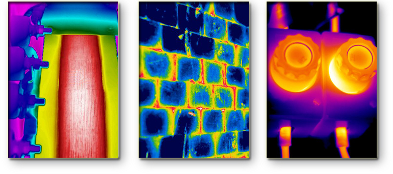
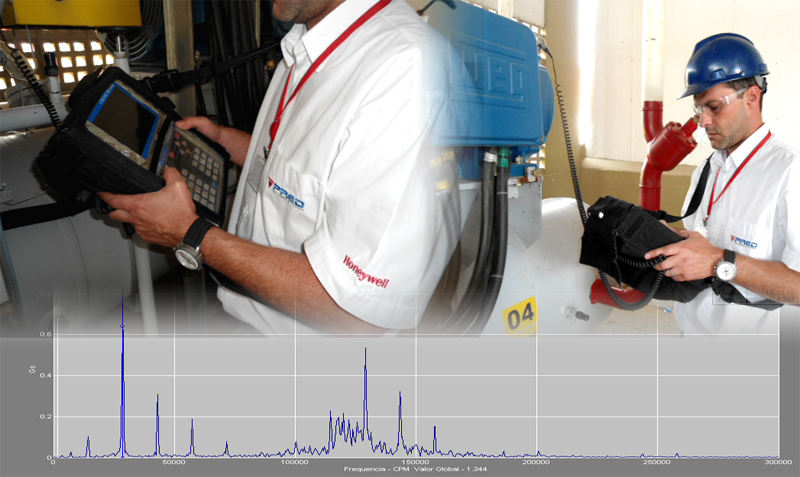
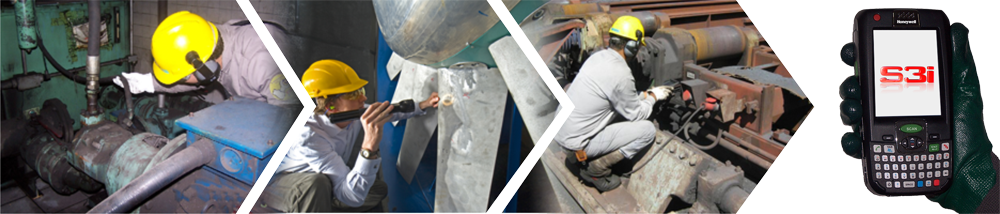
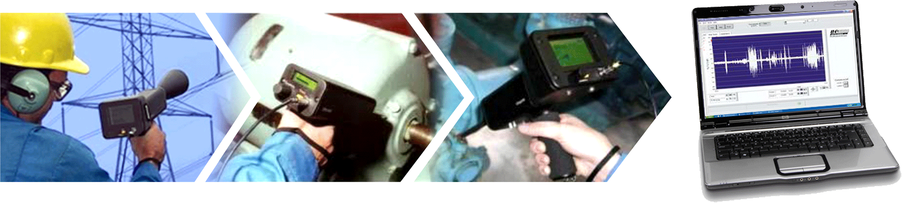
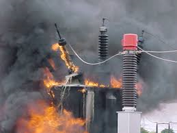
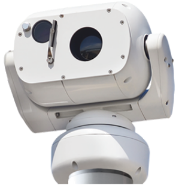

Uma solução de alto valor agregado deve ser mais do que um simples e-paper
Já imaginou otimizar o tempo nas inspeções com inteligência e intuitividade, e ainda aumentar sua produtividade com segurança, precisão das informações e com controle de desempenho e das atividades da equipe?
O software S3i é uma ferramenta que adere às rotinas operacionais utilizando a mobilidade corporativa, garantindo rastreabilidade, inteligência e produtividade às atividades de inspeção, ensaio e auditoria.
Único no mercado que realiza auditoria da qualidade e efetividade de todos os tipos de inspeção em tempo real por meio de uma metodologia própria.
Rastreabilidade e Inteligência para IBM Maximo, Infor, Oracle JDE, SAP e Totvs
O S3i se destaca com a possibilidade de integrar a manutenção com todos os outros sistemas de informação utilizados nas empresas. Possui uma interface de fácil manuseio que permite o gerenciamento da manutenção preditiva e a transferência das informações obtidas nas inspeções para um banco de dados do ERP. Desse modo, elas são processadas, gerando novas informações que permitem a tomada de decisão sobre a necessidade ou não de reparo dos equipamentos inspecionados.
Por se tratar de um sistema autônomo, o S3i, quando integrado aos sistemas de gestão utilizados pela empresa, permite um maior controle do cumprimento da atividade, tornando o sistema de gestão da manutenção adotado pelas empresas ainda mais robusto.
Exclusividades do Software S3i
- Operação rastreável e inteligente de inspeções com peculiaridades essenciais à gestão de ativos;
- Utilização de código de barras, 2D ou RFID como posicionador do inspetor em relação às partes do Ativo a ser inspecionado;
- Utilização de catálogos inteligentes para o registro e tratamento de anomalias (FMEA) em campo;
- Utilização de ferramentas de controle de tempos e movimentos como forma de monitorar a qualidade das inspeções;
- Utilização de reinspeções pós–reparo como forma de validar a eficácia das manutenções corretivas programadas;
- Utilização de recurso que permite o registro, tratamento de falha e encerramento simultâneo de anomalias eliminadas no ato da detecção;
- Avaliações sistêmica do risco de falha (Perigômetro) sobre cada anomalia, utilizando o conceito do GUT, permitindo assim filtrar as que de fato devem gerar Nota/Ordem no ERP/EAM
Saiba mais sobre o S3i.
MCI
Obtenha todo o potencial na sua manutenção de forma simples e estruturada

Desenvolvido pela Pred Engenharia, o método MCI, trouxe uma perspectiva inovadora que, diferente de outros métodos existentes no mercado, promove a integração da cadeia de valores da Manutenção através de atribuições e entregáveis claramente definidos e auditáveis.
No modelo MCI as manutenções preventiva sob condição e corretiva planejada são integradas de forma harmoniosa, em um ciclo fechado, e sustentada por uma ferramenta inteligente denominada PERIGÔMETRO ®. Essa ferramenta, desenvolvida pela Pred, faz a avaliação do que realmente deve entrar nas programações de manutenção, dando equilíbrio ao recurso. É nesse ciclo fechado que conseguimos garantir a disponibilidade e previsibilidade com o menor custo possível, pois se trabalha com a visão mínima de 4 semanas à frente (S+4).

A frase que rege a metodologia MCI é “o simples é o máximo da sofisticação”. Isso porque todas as ações que sustentam o método são simples. No entanto, devido a sua doutrina estruturada e organizada, promove solidez e previsibilidade.
Sistematização da Manutenção
A sistematização racional da manutenção pode contribuir para a redução de 15 a 30% de seu custo fixo/variável
Depois da onda de implementações de sistemas de gestão integrada com ênfase no contábil, os chamados ERP (Enterprise Resource Planning), é hora da manutenção partir para uma nova forma de integrar seus ativos reduzindo custos e melhorando controles.
O problema ganha dimensões ainda maiores no caso de grandes indústrias que têm como ponto crítico os seus custos de manutenção. Reduzir essas despesas se torna prioridade à medida que os custos de manutenção de ativos representam de 20% a 40% do total de custos operacionais destas empresas alcançando, em todo o mundo, aproximadamente US$ 1 trilhão ao ano. A boa notícia é que esse valor pode (e deve), ser reduzido em cerca de um terço com a adoção de uma boa gestão dos ativos operacionais, que parte de uma implantação racional do sistema/módulo de gestão da manutenção.
Com a experiência de 20 anos nesta área, a Pred Engenharia apoia consultivamente no desenvolvimento e/ou na implementação de projetos envolvendo:
Criação/revisão de Planos de manutenção com ênfase na inspeção e lubrificação;
Computação móvel para operacionalização e gestão da manutenção, de forma que a solução não se limite a um simples e-paper. A partir da analise crítica dos requisitos do cliente a Pred Engenharia contribui na formatação do projeto, envolvendo definição da tecnologia de transmissão, definição de hardware, implementação de código de barras/2D/RFID e estratégia de integração com o SAP/PM, MAXIMO, MICROSIGA, dentre outros;
Criação/revisão de Listas técnicas de sobressalentes e estratégia de estoque;
Nivelamento racional do RH da manutenção através da contabilização de tempos e movimentos das equipes, e sua capacitação através das competências essenciais, utilizando metodologia própria. Neste processo a Pred Engenharia apoia o cliente na avaliação dos aspectos comportamentais/culturais, que não devem ser desconsiderados.
Caso a sua necessidade seja apoio na migração de ERP ou troca de versão do mesmo, a Pred Engenharia fornece o serviço de preparação dos dados mestres do legado para uma nova versão e/ou estrutura de dados.
Engenharia de Lubrificação
Pelo menos 50% das falhas em rolamentos e 60% dos problemas em redutores de engrenagens estão associadas à lubrificação.
A Pred Engenharia disponibiliza cinco serviços de engenharia essenciais à otimização técnica, gerencial e financeira dos seus processos de lubrificação de equipamentos. São eles:
Planejamento da Manutenção
O seu planejamento da manutenção foi feito em campo ou dentro de sala?
É muito comum encontrar planos de manutenção que são cópias exatas dos manuais dos equipamentos. Esta prática é típica de planejamentos feitos dentro de sala, ou seja, sem levantamento em campo das peculiaridades das instalações. Quando isso ocorre, acredite, as execuções destes planos provavelmente estão sendo feitas dentro da oficina/escritório. Isso é denominado pela Pred Engenharia como Gestão do Autoengano, ou seja, alguém fez de conta que planejou e as equipes envolvidas estão fazendo de conta que executam.
A Pred Engenharia acredita que um bom plano de manutenção é aquele que é “cumprível”. Para tanto, precisa ser feito em campo e por profissionais experientes, seguindo procedimentos/diretrizes formalmente definidos no diagnóstico da manutenção, sobre as quatro linhas de planejamento acima ilustrado.
Diagnóstico da Manutenção
Um diagnóstico racional da sua manutenção fornecerá subsídios para decisões que poderão reduzir seus custos na ordem de 15 a 30%.
A metodologia Pred Engenharia para a elaboração do diagnóstico da manutenção lhe permite cruzar informações de cinco fontes, e assim obter indicadores que determinarão as medidas necessárias para otimizar os resultados de sua manutenção.
Capacitação de Equipes
A Pred Engenharia disponibiliza treinamentos abertos ou fechados às suas reais necessidades, sempre acompanhados de medição de eficiência e eficácia.
A Pred Engenharia é especialista em treinamentos de alto valor agregado. Através da FLIR, disponibiliza os Treinamentos nível 1 e 2 do ITC (Infrared Training Center), em ambientes abertos e também in company. Promove também treinamentos fechados, customizados e voltados à engenharia de aplicação de técnicas e práticas de planejamento e controle da manutenção/inspeção. São eles:
Aplicações avançadas da termografia em inspeções de instalações elétricas.
Aplicações avançadas da termografia em inspeções de revestimentos estruturais (refratários).
Aplicações avançadas da termografia em inspeções de equipamentos rotativos.
Aplicações avançadas da termografia em inspeções de equipamentos estáticos.
Aplicações avançadas da termografia em monitoramento de processos (automação).
Capacitação de equipes de lubrificadores e gestores.
Auditoria da Manutenção
Confira, através de auditorias, se os planos e as rotinas de sua manutenção estão sendo de fato atualizados na linha do tempo.
O grande desafio dos gestores da manutenção é garantir que, os processos de análise crítica sobre as rotinas da manutenção, estejam acontecendo e que os resultados destes estejam sendo usados na otimização do plano de manutenção.
Com um programa regular de auditorias você terá como detectar a descontinuidade destes processos e tomar medidas para a regularização, antes que os mesmos reflitam na sua taxa de falhas/interrupções e/ou nos custos da manutenção.
Termografia
Evitar falhas e acidentes em instalações é tão simples quanto deixa-las ocorrer.

A termografia é uma técnica que permite mapear um corpo ou uma região com o objetivo de distinguir áreas de diferentes temperaturas, sendo, portanto uma técnica que permite a visualização artificial da luz dentro do espectro infravermelho.
A termografia tem um papel muito importante na área de manutenção preditiva. Através da sua utilização, é possível eliminar muitos problemas de produção, evitando falhas elétricas, mecânica e fadiga de materiais.
A Pred Engenharia atua no mercado de serviços e produtos ligados a Termografia Industrial desde 1993, operando em todos os estados do Brasil e em outros países. Neste segmento, desenvolvemos e utilizamos tecnologias de ponta para planejamento, inspeções, análises, cálculos, avaliações e gerenciamentos termográficos para as mais diversas aplicações industriais.
Como forma de prevenir acidentes e falhas técnicas, a norma técnica ABNT NBR 15763.2009 recomenda o uso da termografia infravermelha em sistemas elétricos em intervalos de seis meses. Empresas seguradoras apreciam esta prática de inspeção em suas avaliações de risco e, em casos específicos, exigem laudos periódicos de termografia como forma de se evidenciar a boa condição técnica das instalações dos clientes.
Análise de Vibração
Técnica que permite a detecção e diagnóstico precoce de anomalias em componentes móveis de equipamentos.

A Análise de Vibração é o processo pelo qual as falhas em componentes móveis de um equipamento são descobertas pela taxa de variação das forças dinâmicas geradas. Tais forças afetam o nível de vibração, que pode ser avaliado em pontos acessíveis das máquinas, sem interromper o funcionamento dos equipamentos.
A análise de vibração usa a condição operacional real do equipamento e está baseada no conhecimento do estado da máquina através de medições periódicas ou contínuas de um ou mais parâmetros significativos, evitando assim, paradas inesperadas e substituição de peças desnecessárias.
Inspeção Sensitiva
Obtenha resultados de alto valor agregado integrando as inspeções sensitivas às preditivas.

Esta é a modalidade de inspeção que abrange praticamente todos os modos de falhas do equipamento ou instalação industrial. Apesar de se limitar normalmente ao uso dos sentidos naturais do inspetor, ela, na maioria das vezes é suficientemente capaz de detectar e diagnósticar anomalias em seus estágios mediano de degradação. Com a utilização de computação móvel, as inspeções sensitivas executadas pela Pred Engenharia passam a ser inteligentes e altamente rastreáveis.
Análise de Óleo Isolante
Acompanhe de forma preditiva o ciclo de vida de equipamentos elétricos com isolamento a óleo.
Os equipamentos elétricos com isolamento a óleo, possuem em sua constituição um conjunto de materiais, dentre os quais citamos os dielétricos, que são em sua maioria, compostos orgânicos. Estes materiais quando submetidos à ação de defeitos e/ou falhas (térmicas e elétricas), se decompõe formando gases, combustíveis ou não. Os gases formados são total ou parcialmente dissolvidos no óleo, diluídos e transportados a todos os pontos por ele atingidos. Assim, as análises de óleo avaliam o estado de envelhecimento, características de desempenho e contaminação do óleo isolante. Para a elaboração do diagnóstico analítico, avalia os óleos isolantes, através da verificação de diferentes propriedades, atraves das técnicas de:
- Análise físico-química de rotina
- Análise de gases disolvidos por cromatografia de fases gasosas
- Teor de PCB
- Grau de polimerização
- Furfuraldeído e Passivadores
- Enxofre corrosivo
- Microscopia Eletrônica de Varredura (MEV)
- Estabilidade à oxidação
- Carbonilados
- Óleo vegetal
- Silicone e R-Temp
- Compatibilidade
- Contagem de partículas
- ANP
Inspeção por Ultrassom
Possibilita a detecção e análise de defeitos mecânicos em máquinas de baixa rotação, instalações elétricas, vazamentos de fluidos gasosos, dentre outros.

A inspeção por ultrassom detecta sons produzidos por operações mecânicas, emissões elétricas e fluxo de fluidos. A detecção por ultrassom permite encontrar falhas em praticamente todos os equipamentos existentes e em instalações industriais.
Inspeção em Bancos de Baterias
Garanta que seus sistemas de fornecimento de energia de emergência (UPS) estejam em perfeitas condições de uso.
As atividades de manutenção preventiva e preditivas em bancos de baterias executadas pela Pred Engenharia visam detectar e eliminar falhas ocultas, e são determinadas por normas técnica, que contemplam as seguintes atividades:
- Inspeção visual.
- Inspeção visual interna.
- Análise físico química do eletrólito.
- Inspeção dimensional.
- Ensaio de estanqueidade.
- Capacidade, em ampère-hora, nas condições nominais.
- Aptidão à flutuação/reserva de eletrólito.
- Capacidade, em ampère-hora, para regime diferente do normal.
- Queda de tensão nas interligações.
- Retenção de carga (autodescarga).
- Durabilidade a ciclos de descarga.
- Resistência interna e corrente de curto circuito.
- Durabilidade a sobrecarga com tensão de flutuação e temperatura elevadas.
- Análise físico-química dos materiais.
- Eficiência de recarga.
- Identificação dos materiais poliméricos.
- Revelação de tensões residuais de moldagem dos vasos.
- Ensaio de inflamabilidade.
- Perda de capacidade após ensaio mecânico.
- Ensaio de ciclagem térmica.

Uma solução da Pred acompanhada de engenharia de aplicação e ferramentas específicas
SISTEMA FIXO POR TERMOGRAFIA
Na indústria, muitas anormalidades ou acidentes operacionais poderiam ser facilmente evitados ou amenizado os seus impactos, se as operações fossem visualizadas em tempo real e integral. Inconvenientes como baixa luminosidade, mal tempo e condições operacionais adversas, dificultam a visualização das operações e consequentemente ampliam a probabilidade da ocorrência de um acidente ou da perda do controle de um processo.
 A termografia por infravermelho é o método mais confiável e preciso no acompanhamento contínuo de operações onde a temperatura é uma das
variáveis do processo. As câmeras termográficas utilizadas pela Pred Engenharia, possuem lentes com zoom contínuo oferecendo uma solução singular de rastreamento e medição de temperaturas em diferentes distancias. A lente de zoom é totalmente controlada por software especialista. Os sistemas fixos de termografia (SFT), fornecidos pela Pred Engenharia, são customizados para atender as mais diversas aplicações de análises e avaliações sistêmicas de irregularidades quantitativas e/ou qualitativas.
Sua aplicação se faz presente em processos relacionados à visão de apoio e em controle de processos.
Na indústria, muitas anormalidades ou acidentes operacionais poderiam ser facilmente evitados ou amenizado os seus impactos, se as operações fossem visualizadas em tempo real e integral. Inconvenientes como baixa luminosidade, mal tempo e condições operacionais adversas, dificultam a visualização das operações e consequentemente ampliam a probabilidade da ocorrência de um acidente ou da perda do controle de um processo.
A termografia por infravermelho é o método mais confiável e preciso no acompanhamento contínuo de operações onde a temperatura é uma das variáveis do processo. As câmeras termográficas utilizadas pela Pred Engenharia, possuem lentes com zoom contínuo oferecendo uma solução singular de rastreamento e medição de temperaturas em diferentes distancias. A lente de zoom é totalmente controlada por software especialista. Os sistemas fixos de termografia (SFT), fornecidos pela Pred Engenharia, são customizados para atender as mais diversas aplicações de análises e avaliações sistêmicas de irregularidades quantitativas e/ou qualitativas. Sua aplicação se faz presente em processos relacionados à visão de apoio e em controle de processos.
Visão de Apoio
Com ênfase na segurança operacional em equipamentos e processos, esse tipo de aplicação, classificada de baixo custo e de alto valor agregado, é essencialmente qualitativa (distribuição térmica) e possibilita supervisão em tempo real e integral.
Controle de Processos
A termografia aplicada a controle de processos visa assegurar qualidade, produtividade e/ou segurança. As aplicações são qualitativas e também quantitativas em operações em tempo real e integral.
As soluções da Pred, aplicadas a controle de processos são sempre acompanhadas de engenharia de aplicação e ferramentas específicas. O Portal SFT é uma dessas ferramentas. É um sistema inteligente para a supervisão e monitoração de tendências termográficas de equipamentos e processos nas mais diversas aplicações industriais. O Portal SFT é totalmente configurável e apto a trabalhar em nuvem. A termografia por infravermelho é o método mais confiável e preciso no acompanhamento contínuo de operações em locais com condições adversas para visualização.
Conheça mais as nossas aplicações para visão de apoio e controle de processos por termografia!
"O simples é o máximo da sofisticação. Se você quer uma coisa extremamente inovadora, faça o simples. Não simplista. O simples de forma estruturada e organizada."
OZÓRIO REZENDE (Diretor, Pred Engenharia)